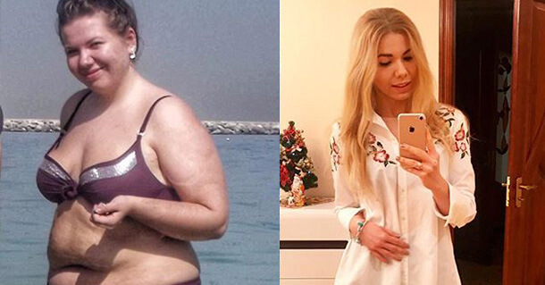

SO NEHMEN SIE AB (IN MEINEM FALL 47KG) UND HABEN EIN NEUES LEBEN. MEIN NEUES LEBEN BEGANN MIT 33!

Hallo zusammen! ich bins, die Autorin dieses Blogs (heute und vor 5 Monaten). Schauen Sie sich nur mein neues Gesicht an! 😊
Gerne teile ich mit Ihnen meine Geschichte, wie ich nur noch 47kg wiege und nicht mehr fett bin.
Ich war ziemlich schlank, aber als ich heiratete, änderte sich alles. Mein Mann und ich saßen mit Gläsern, Bier und Chipsauf dem Sofa und schauten stundenlang fern. Viele von Ihnen werden wissen, worüber ich spreche. Ich habe geheiratet und aufgehört, mir Sorgen um mein Erscheinungsbild zu machen. Ich habe jetzt meinen Ring, warum also sollte ich mir schon groß Mühe geben? Zugenommen? Die Waage zeigt einen Rekordwert von 78kg. Egal! Mein Mann liebt mich so wie ich bin.
Ich habe weiter zugenommen. Es waren dann schon 94kg.

Nach und nach verwandelte ich mich in ein Schwein. Ich habe kein Problem, mich so zu nennen. Anstelle von zwei Kinn hatte ich vier. Ich könnte Geld in den Falten meines Bauches verbergen. Ich schwöre, dass niemand es finden würde, wenn sie mich durchsuchen würden. Mein schlaffer Körper zitterte bei der geringsten Bewegung, und die Bewegung brachte mich zum Keuchen. Ich habe den Aufzug benutzt, um in den zweiten Stock zu gelangen, weil ich Angst hatte zu ersticken.
Wir entschieden uns für ein Baby, aber es war leichter gesagt als getan. Sie erzählten uns in der Fruchtbarkeitsklinik, dass ich abnehmen müsste und gaben mir eine strikte Diät. Mein Mann hat mich unterstützt, wir hatten kein "verbotenes" Essen im Haus. Ich habe 18kg abgenommen und jeder sagte, ich sei großartig. Doch dann fing alles wieder von vorne an. JETZT DARF ICH WIEDER ESSEN. Ich nahm an Gewicht zu und wurde noch dicker als zuvor.

Mit 30 hatte ich schwere gesundheitliche Probleme. Cholesterin, Blutdruck, Herz- und Pankreasprobleme, Typ-2-Diabetes und sogar Psoriasis. Alles wegen meines fetten Arsches. Ich sah nicht nur schlecht aus, ich spürte es. Ich war total apathisch und deprimiert.
Meine Beziehung war auch mit Problemen behaftet. Ich hatte seit Monaten keinen Sex mit meinem Mann. Er unterstützte mich zuerst, aber dann hörten wir fast auf zu reden.In diesem Moment wurde mir klar, dass dies AUFHÖREN MUSSTE!
Ich habe nicht einmal über Diäten oder das Fitnessstudio nachgedacht. Ich musste schnell handeln, um meine Ehe zu retten. Ich habe im Internet gesucht und sogar einen Ernährungsberaterin online konsultiert. Ich beschrieb meine Situation und sagte ihr, ich brauche ein schnelles und dauerhaftes Ergebnis. Sie empfahl mir .
Hätte ich das nur früher gekannt. sind Brausetabletten, die den Körper während der Ketose (Kohlenhydratmangel der Zellen) unterstützen. Seine Wirkstoffe minimieren die Müdigkeit, beseitigen Apathie, verhindern die "Keto-Grippe" und versorgen den Körper mit wichtigen Nährstoffen. Mit kann man alle Lebensmittel mit Kohlenhydraten essen, solange man es nicht übertreibt. Die aktive Formel beschleunigt die Fettverbrennung um das 2- bis 3-fache, ohne den Körper negativ zu beeinträchtigen.
Ich habe mich gemessen und war erstaunt, dass ich in nur einer Woche 3cm Bauchumfang verloren habe.

In einem Monat habe ich 12kg abgenommen, ohne etwas zu tun! Echt! Ich nahm nur und habe wie immer gegessen: Fleisch, Nudeln, Fisch, sogar Torten. Aber die Portionen wurden viel kleiner. Ich war voller Hoffnung und bestellte mir mehr.
Lange Rede, kurzer Sinn: Schauen Sie sich nur mein Foto an!
In 5 Monanten mit habe ich 47kg abgenommen. Ich schaue mir meine alten Fotos an und möchte nie mehr so sein wie früher. Ich bin jetzt eine gesunde Frau und fühle mich wunderbar. Ich habe ein glückliches Lächeln und unsere Leidenschaft in der Ehe ist zurückgekehrt. Gott sei Dank sind die harten Tage vorbei! Nach dem Abnehmen begann ich mich nach einem aktiven Lebensstil zu sehnen. Wir schlürfen uns nicht mehr vor dem Fernseher, sondern haben aktive Wochenenden.
PS: Ich bin mehr als zufrieden mit dem Ergebnis und glaube, dass Sie es auch können! Ich habe in den Kommentaren gesehen, dass viele von Ihnen auch abnehmen wollen. Deshalb habe ich meine Erfahrungen geteilt. Wenn Sie Probleme haben, auf traditionelle Weise abzunehmen (so wie in meinem Fall), können Sie hier bestellen. Das wird auch Ihnen zu einem neuen Leben verhelfen.
Kommentare: